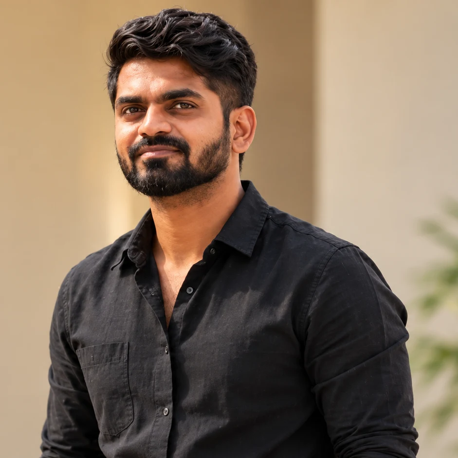
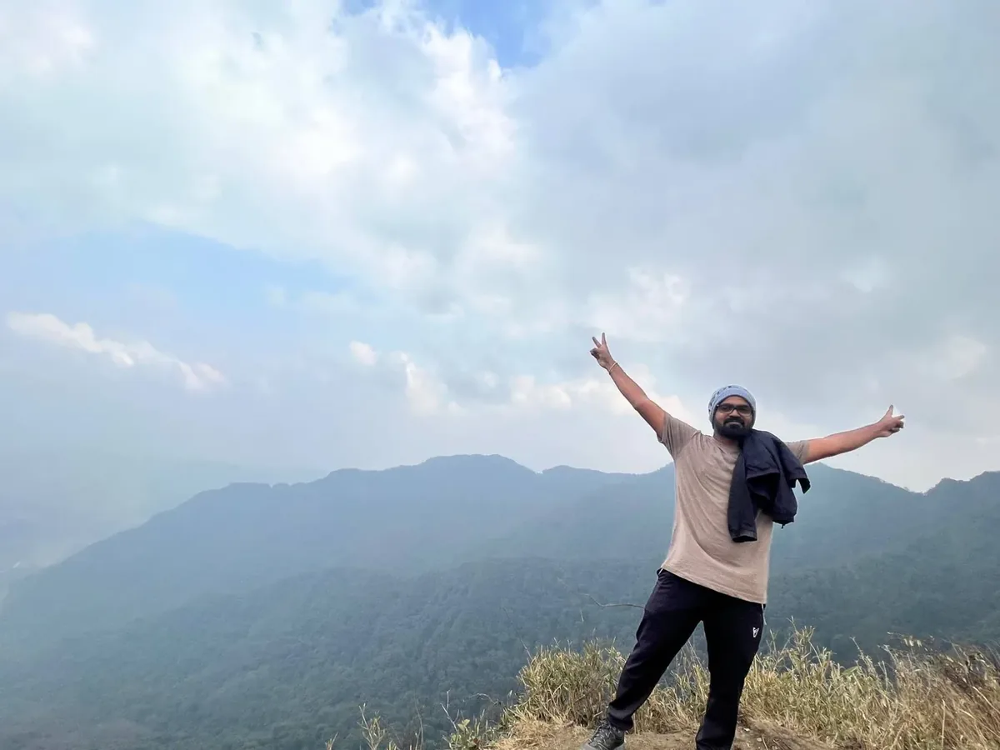
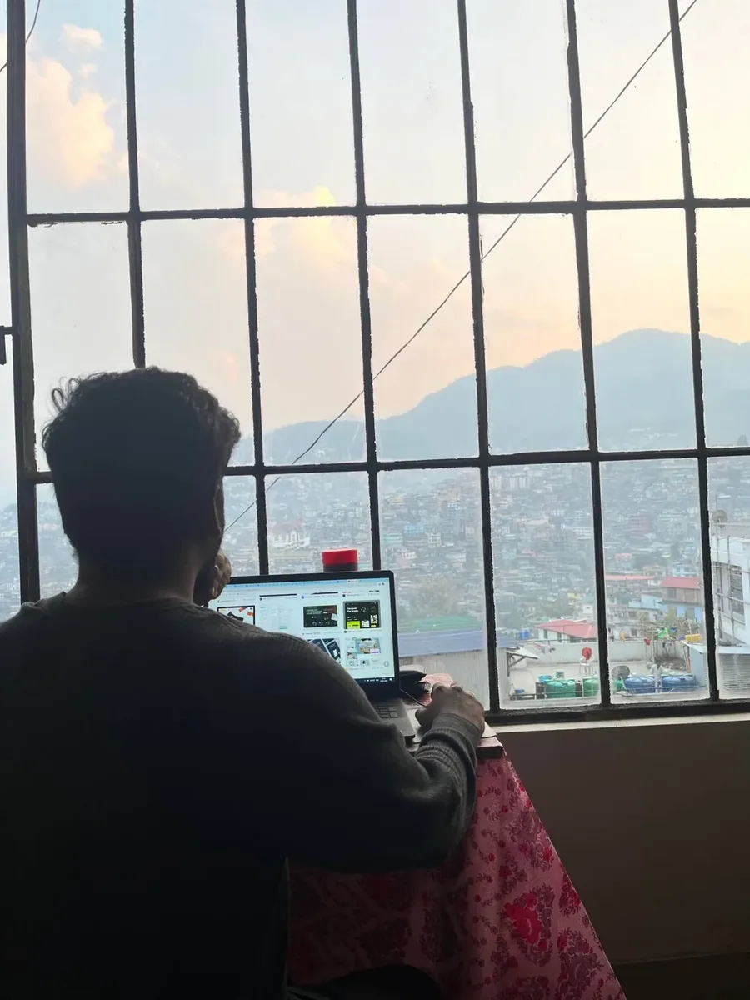

Understand the people
User interviews, workflow observation, and research help me understand what people need before exploring solutions.
About Dayala · Beyond the portfolio
After working in the mechanical industry, a conversation with a school teacher reminded me how much I had always loved drawing and creating. That moment led me toward design.
Today, I’m a Senior UX/UI Designer in Chennai. I bring the precision I learned in engineering and 6+ years of design experience to understanding people and simplifying complex products.
Explore my experience
Precision, empathy, and a little curiosity.
How I approach design
User interviews, workflow observation, and research help me understand what people need before exploring solutions.
I turn enterprise workflows into thoughtful user journeys, clear interfaces, and reusable design systems.
I work toward WCAG 2.1 AA, with accessible interactions and usability testing to check how designs work for people.
From precision to people
My path began in mechanical engineering, working on the BMW RR 310 engine line at Sundaram Clayton. That experience taught me precision, quality, and how small details shape the whole.
I moved into graphic design at Madura Digitals, then UX design at MacApp Studio, before taking on enterprise SaaS and AI product work as a Senior UX/UI Designer.
Explore my career timelineThe work behind the craft

Aug 2022 to Present
Info Services
Leading UX for enterprise SaaS and AI products: a Figma design system cut iteration time by 40%, AI-integrated workflows sped task completion by 32%, A/B tests lifted task efficiency by 15%, and research-led UX strategy raised project efficiency by 25%.
Jul 2020 to Aug 2022
MacApp Studio
Turning product ideas into clear interfaces and thoughtful experiences across mobile and web.
Jan 2019 to Jun 2020
Madura Digitals
Building a visual foundation through branding and digital design, before moving deeper into product experiences.

Jul 2017 to Jul 2018
Sundaram Clayton
Working on the BMW RR 310 engine line taught me precision, quality, and how small details shape the whole experience.
Learning that shaped my practice
2024
Design for Change
2022
Alagappa University
2018
J Spider Online Course
2016
PSN Polytechnic College
Beyond the screen
Mountain trails, time with friends, and working from new places are part of my story too.


I’m open to opportunities in all locations with a positive, supportive work environment.
Email me